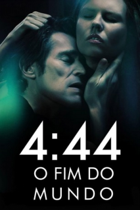

4:44 - O Fim do Mundo (2011)



Avaliação (TMDb):


4.7/10 (103 votos)
Avaliação (Usuário):
Outro Título:4:44 Last Day on Earth
País:France, 82 minutos
Idiomas falados:Inglês, Português
Gênero(s):Drama, Sci-Fi
Diretor(s):Abel Ferrara
Codec:MPEG-2 (DVD)
Número: 81
Sinopse:
Um olhar sobre o que aconteceria se todos soubessem que o mundo iria acabar.
Elenco:
Willem Dafoe, Shanyn Leigh, Natasha Lyonne, Paul Hipp, Pat Kiernan, Anita Pallenberg, Paz de la Huerta
Tipo de mídia: DVD5,
Legendas: Inglês, Português
Alugado: Não
Tela: 1.85:1